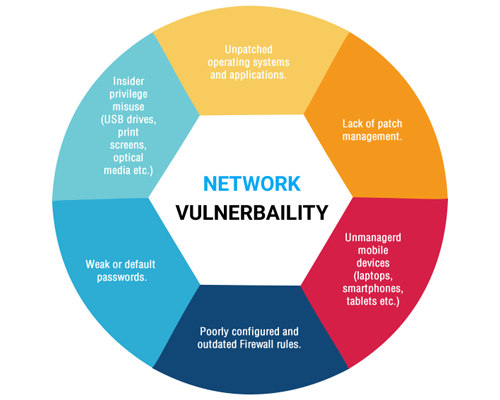

A security risk is often incorrectly classified as a vulnerability. The use of vulnerability with the same meaning of risk can lead to confusion. The risk is the potential of a significant impact resulting from the exploit of a vulnerability. Then there are vulnerabilities without risk: for example when the affected asset has no value. A vulnerability with one or more known instances of working and fully implemented attacks is classified as an exploitable vulnerability-a vulnerability for which an exploit exists.
Vulnerabilities are classified according to the asset class they are related to:
Hardware
Software
Network
Personnel
Physical Site
Organizational
Causes
- Complexity: Large, complex systems increase the probability of flaws and unintended access points.
- Familiarity: Using common, well-known code, software, operating systems, and/or hardware increases the probability an attacker has or can find the knowledge and tools to exploit the flaw.
- Connectivity: More physical connections, privileges, ports, protocols, and services and time each of those are accessible increase vulnerability.
- Password management flaws: The computer user uses weak passwords that could be discovered by brute force. The computer user stores the password on the computer where a program can access it. Users re-use passwords between many programs and websites.
- Fundamental operating system design flaws: The operating system designer chooses to enforce suboptimal policies on user/program management. For example, operating systems with policies such as default permit grant every program and every user full access to the entire computer. This operating system flaw allows viruses and malware to execute commands on behalf of the administrator.
- Internet Website Browsing: Some internet websites may contain harmful Spyware or Adware that can be installed automatically on the computer systems. After visiting those websites, the computer systems become infected and personal information will be collected and passed on to third party individuals.
- Software bugs: The programmer leaves an exploitable bug in a software program. The software bug may allow an attacker to misuse an application.
- Unchecked user input: The program assumes that all user input is safe. Programs that do not check user input can allow unintended direct execution of commands or SQL statements (known as Buffer overflows, SQL injection or other non-validated inputs).
- Not learning from past mistakes.
Consequences
The impact of a security breach can be very high. Most legislation sees the failure of IT managers to address IT systems and applications vulnerabilities if they are known to them as misconduct; IT managers have a responsibility to manage IT risk. Privacy law forces managers to act to reduce the impact or likelihood of that security risk. Information technology security audit is a way to let other independent people certify that the IT environment is managed properly and lessen the responsibilities, at least having demonstrated the good faith. Penetration test is a form of verification of the weakness and countermeasures adopted by an organization: a White hat hacker tries to attack an organization's information technology assets, to find out how easy or difficult it is to compromise the IT security. The proper way to professionally manage the IT risk is to adopt an Information Security Management System, such as ISO/IEC 27002 or Risk IT and follow them, according to the security strategy set forth by the upper management.
One of the key concept of information security is the principle of defence in depth, i.e. to set up a multilayer defense system that can:
- Prevent the exploit
- Detect and Intercept The Attack
- Find Out The Threat Agents and ProsecuteThem
Physical security is a set of measures to physically protect an information asset: if somebody can get physical access to the information asset, it is widely accepted that an attacker can access any information on it or make the resource unavailable to its legitimate users.
Some sets of criteria to be satisfied by a computer, its operating system and applications in order to meet a good security level have been developed: ITSEC and Common criteria are two examples.
Vulnerability Disclosure
Coordinated disclosure (some refer to it as 'responsible disclosure' but that is considered a biased term by others) of vulnerabilities is a topic of great debate. As reported by The Tech Herald in August 2010, "Google, Microsoft, TippingPoint, and Rapid7 have issued guidelines and statements addressing how they will deal with disclosure going forward." The other method is typically full disclosure, when all the details of a vulnerability is publicized, sometimes with the intent to put pressure on the software author to publish a fix more quickly. In January 2014 when Google revealed a Microsoft vulnerability before Microsoft released a patch to fix it, a Microsoft representative called for coordinated practices among software companies in revealing disclosures.
- Vulnerability Inventory
Mitre Corporation maintains an incomplete list of publicly disclosed vulnerabilities in a system called Common Vulnerabilities and Exposures. This information is immediately shared with the National Institute of Standards and Technology (NIST), where each vulnerability is given a risk score using Common Vulnerability Scoring System (CVSS), Common Platform Enumeration (CPE) scheme, and Common Weakness Enumeration.
OWASP maintains a list of vulnerability classes with the aim of educating system designers and programmers, therefore reducing the likelihood of vulnerabilities being written unintentionally into the software.

Software Vulnerabilities
Common types of software flaws that lead to vulnerabilities include:
- Buffer Overflows and Over-Reads
- Dangling Pointers
- Code Injection
- Cross-site Scripting in Web Applications
- Directory Traversal
- E-mail Injection
- Format String Attacks
- HTTP Header Injection
- HTTP Response Splitting
- SQL Injection
- Clickjacking
- Cross-site Request Forgery in Web Applications
- FTP Bounce Attack
- Privilege Escalation